店主について
創作ピザとスイーツのお店「るべりえ」の
店主・中村の紹介です。

店主の中村は、元パティシエです。フランスの老舗パティスリー「ピラティー」で技術を学び、帰国後は東京のパティスリーや揚げピザ専門店に勤務しました。
お菓子作りの経験があるからこそ、スイーツピザとスイーツ揚げピザは、るべりえの得意分野のひとつです。
2016年、邑楽町の赤いコンテナに「るべりえ」を開業しました。群馬県産小麦100%の生地で作る創作ピザとスイーツのお店として、今年で10年目になりました。
最近は、ラジオ番組や動画の制作にも取り組んでいます。
フランス研修
パティシエ時代には、フランスでの現地研修も経験しました。

フランスでの研修時代。中央が中村です。
開店後にはフランスを再訪して、研修先のシェフとも再会しました。


左：研修時代、研修先のシェフと。右：るべりえ開店後に再会した時です。
店名の由来
「るべりえ（Le bélier）」は、フランス語で「おひつじ座」という意味です。店主自身の星座であり、12星座の中で1番目の星座でもあることから、新しいことに挑戦する気持ちを込めて名付けました。
お店の歩み
原点は、祖父母の商店
店主の中村は、祖父母が営む「中村商店」のある家で育ちました。お店がいつも身近にある暮らしが、商売の原風景になっています。
甘いものを食べるのが好きで、学生時代は野球にも打ち込みました。ある時、図書館で見つけたレシピ本を見よう見まねに、初めてケーキを作ってみたところ、家族が笑顔になってくれました。「作ったもので誰かが喜んでくれる」——その体験が、今の仕事の原点です。
修業の年月
- 辻調理師専門学校の東京校で学び、フランス校（リヨン）では優秀賞を受賞しました。
- フランス・ロアンヌの老舗パティスリー「ピラティー」で研修。ミシュラン三ツ星レストラン「トロワグロ」でショコラティエを務めた方から、特に多くのことを学びました。
- 研修先のシェフはフランスとイタリアのクォーターで、イタリアの食文化に触れたことも大きな転機になりました。
- 帰国後は、東京のパティスリーに5年、揚げピザの専門店に4年勤務しました。
- 群馬に戻ってからは、飲食とは関係のない会社で正社員として働き、開業資金を貯めました。
研修時代の写真は、上の「フランス研修」の欄にあります。
2016年、赤いコンテナのお店ができるまで
2016年1月、邑楽町に店の建設予定地が決まりました。
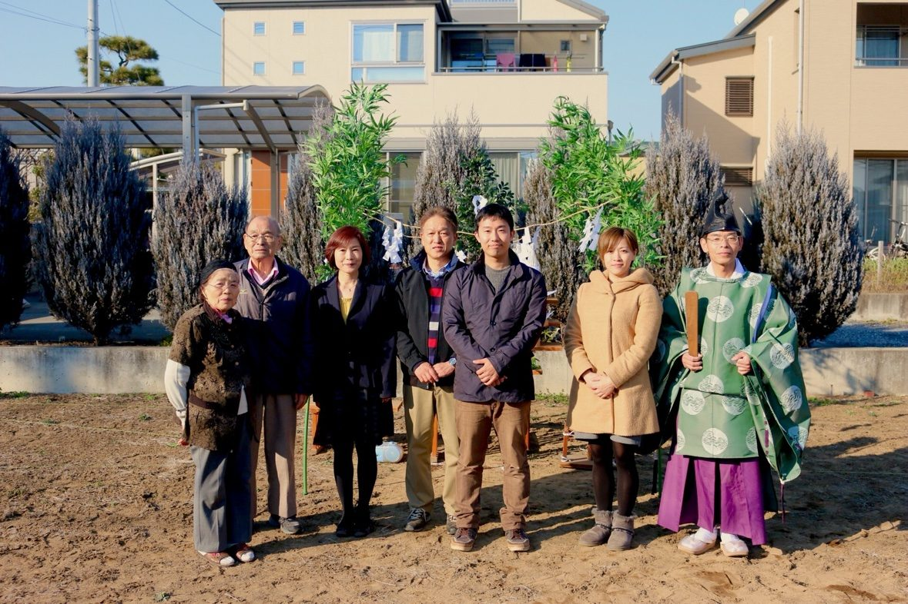
2016年2月、地鎮祭。家族で記念撮影をしました。まだ何もない更地から、店づくりが始まります。
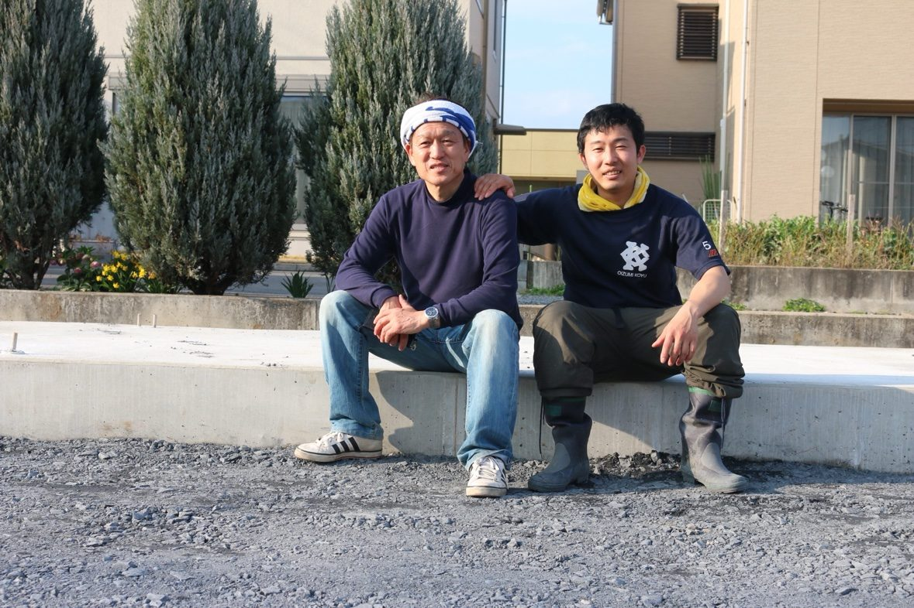
3月に入って工事が本格化。整地や基礎工事が進み、父と一緒に駐車場の砂利をならしました。
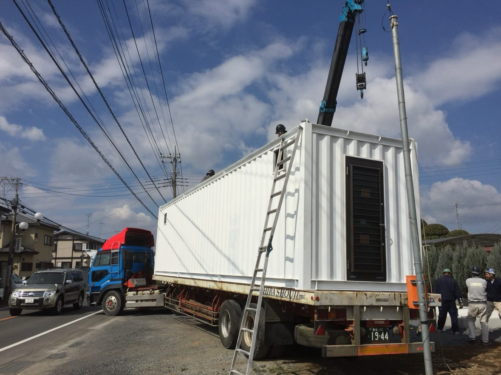
3月21日、40フィートの大きなコンテナが到着し、クレーンで据え付けられました。今では「赤いコンテナのお店」として知られていますが、届いた時は真っ白なコンテナでした。
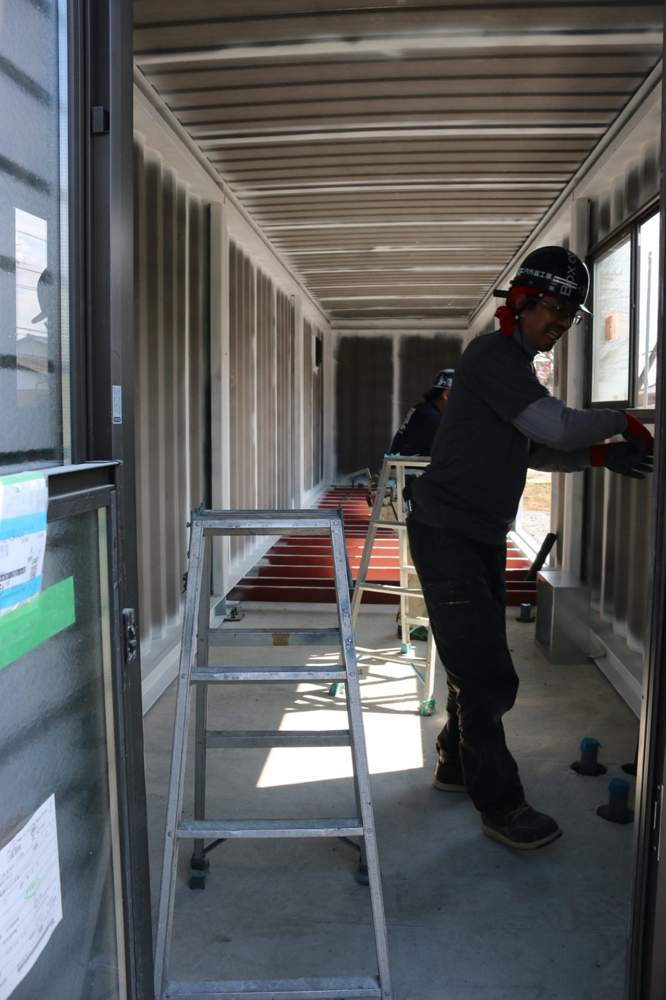
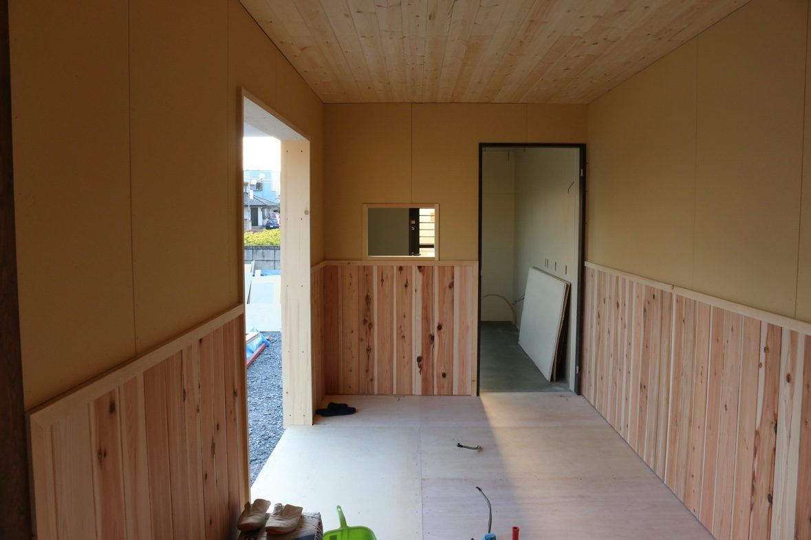
左：内装工事前のコンテナ内部。右：木の壁と天井が入った店内。少しずつ今の店内が形になっていきました。
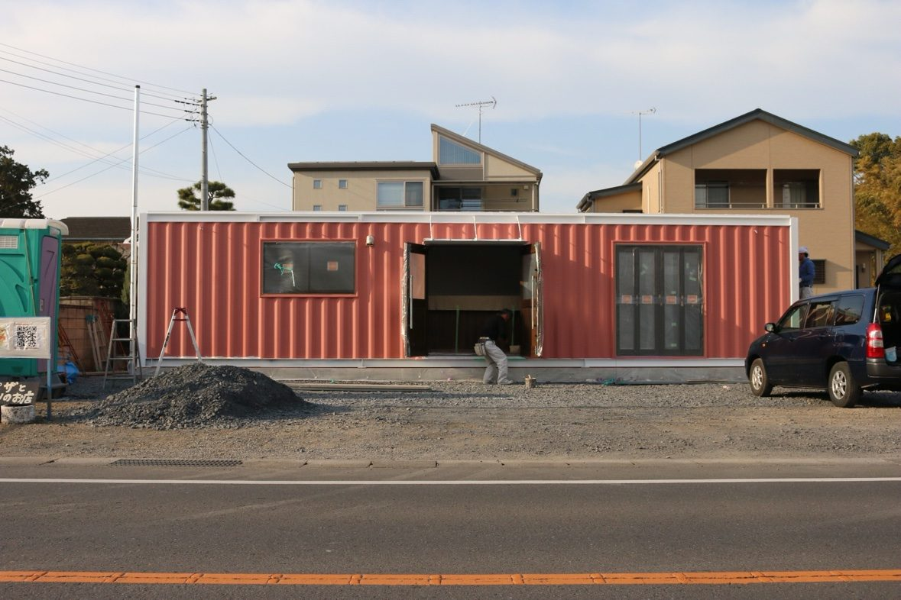
3月末、外壁の下地塗装の段階では、コンテナ全体がピンク色に。近所の方に「何ができるの？」と心配される一幕もありました。
外壁の色は、最初は黒が第一候補でした。「黒が好きだったけれど、威圧感が出るかもしれない」と考えてオレンジに変え、最終調整で届いた完成イメージの赤味のある色が一番しっくりきたため、赤に決めました。今では、この赤がお店の目印になっています。
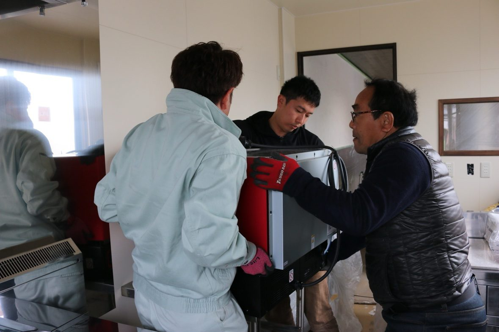
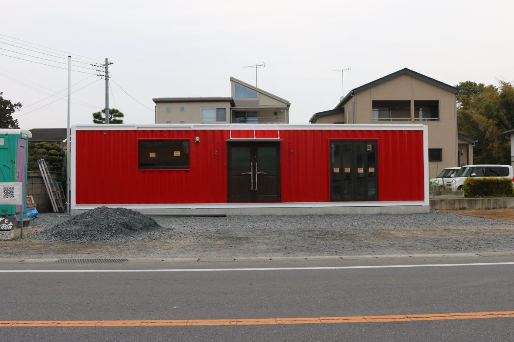
4月1日、ピザ用電気オーブン（ツジ・キカイ eNAPOLI 500）が搬入され、外観も鮮やかな赤に塗装されました。
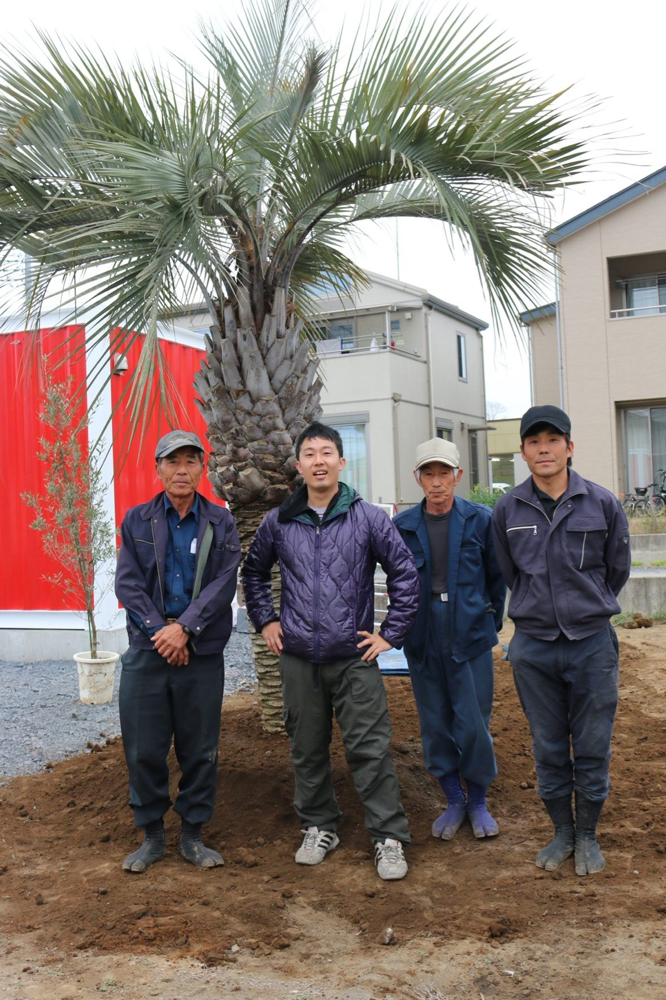
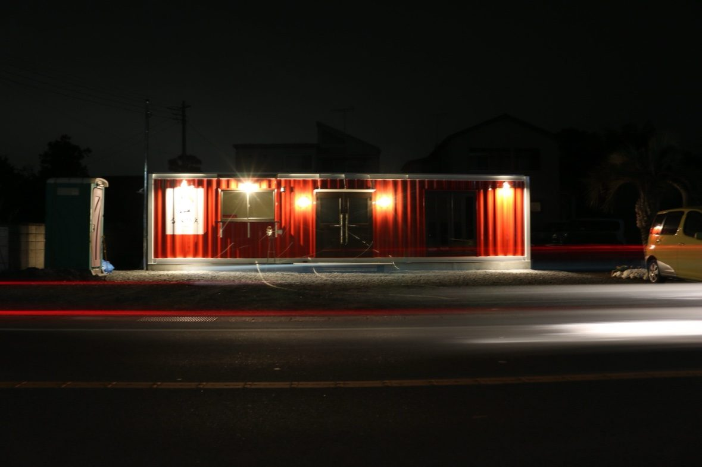
4月2日にはココスヤシを植え、電気工事で明かりが灯り、看板も付きました。夜、暗闇に赤いコンテナが浮かぶのを見て、「本当にお店になるんだ」と実感した頃です。
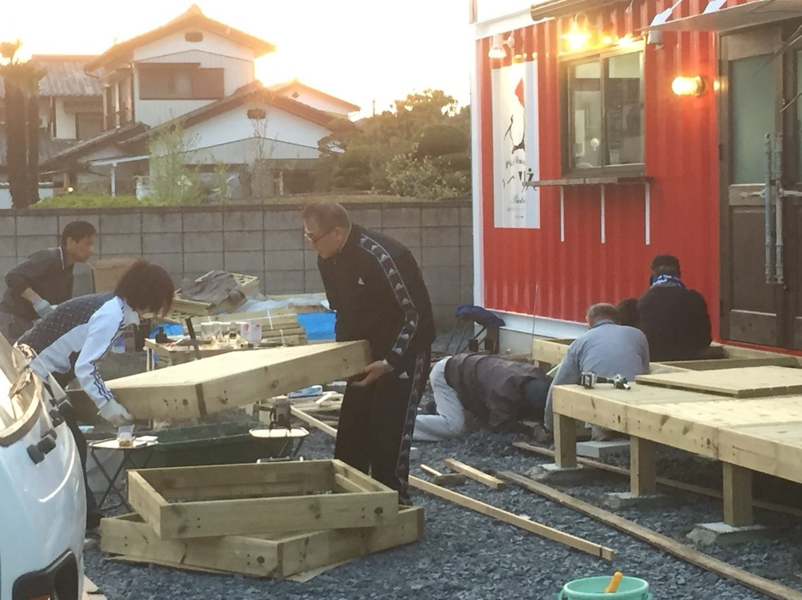
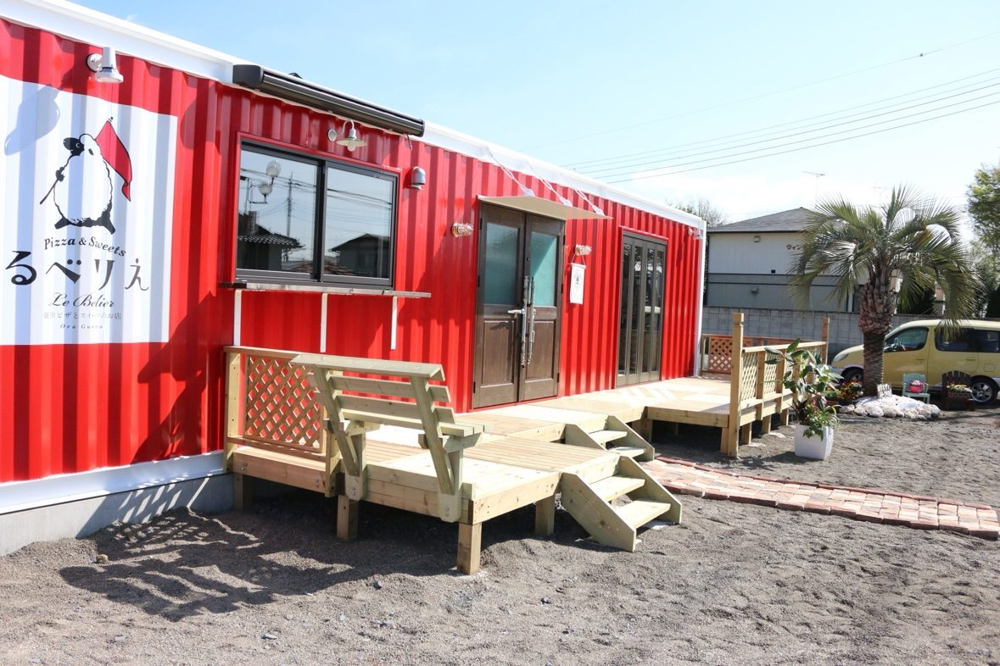
4月9日・10日は、家族や親戚が集まって、店前の木製テラスをDIYで作りました。家族みんなで作ったお店です。
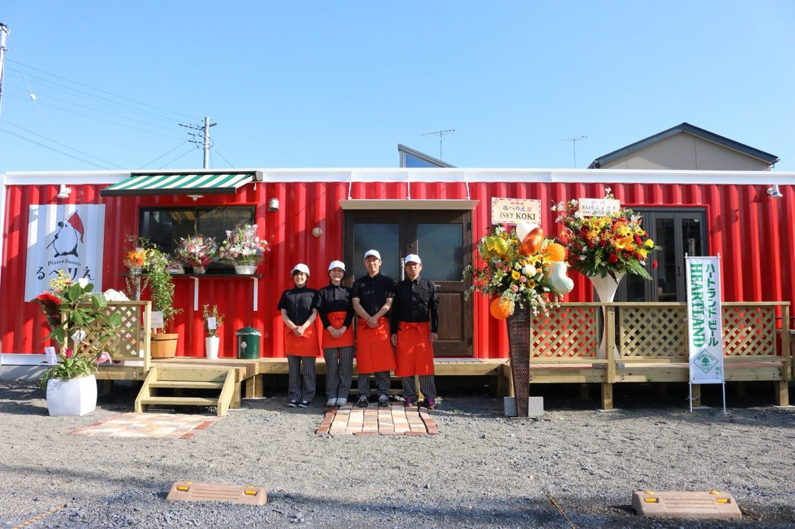
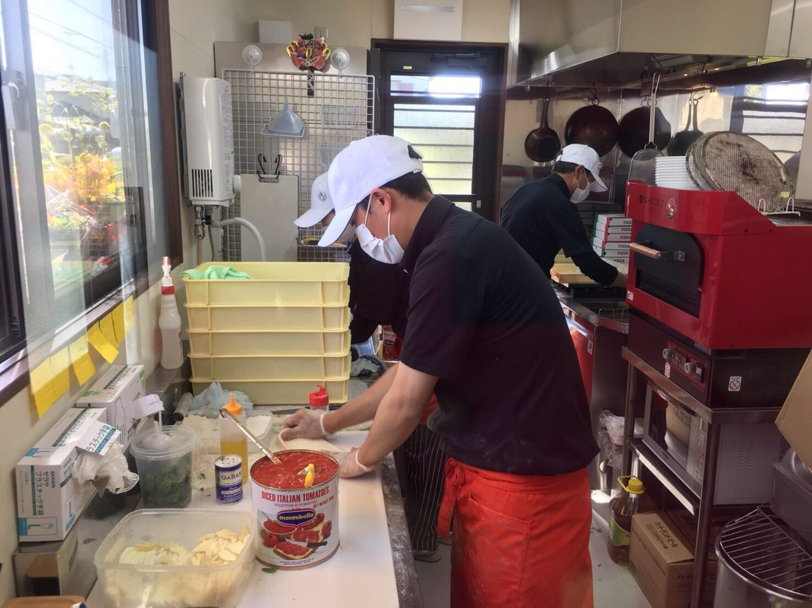
4月15日から17日までの3日間、プレオープンを行いました。予想を超える盛況で、急遽テイクアウトのみの営業に切り替え、用意した1日500個分のピザ生地が連日完売しました。
そして2016年4月18日、「るべりえ」はグランドオープンを迎えました。
開業から10年
開業後も少しずつ形を変えながら、営業を続けてきました。
コロナ禍をきっかけに、冷凍商品づくりを本格化。−35℃で急速凍結できるブラストチラー／ショックフリーザーの導入が、その鍵になりました。冷凍ピザは冷凍自販機やネットショップ、邑楽町のふるさと納税返礼品としてもお届けしています。
- 2024年2月：冷凍自販機が上毛新聞「東毛シャトル」で紹介されました。
- 2025年1月：テレビ朝日「マツコ＆有吉 かりそめ天国」で紹介されました。
- 2026年：開業10年目。これまでの経験を形にする「アウトプット期」として、ラジオ番組や動画の制作にも取り組んでいます。
これからも、邑楽町の赤いコンテナから、創作ピザとスイーツをお届けしていきます。